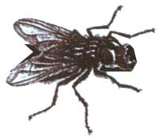
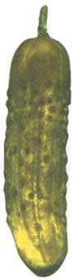

Country Lore
An "a-peeling" way to prevent kitty from invading your flower beds.
Look Before Jumping
Over the years I have jump-started many vehicles for friends and strangers. Unless the driver leaves the headlights on, the most common reason for jump-starting is improper care of the car's battery. In addition to heavy-duty jumper cables, I always carry a 1/2" wrench, a 10-mm wrench, pliers, a terminal puller, and a battery post-terminal cleaner. During warm weather I also carry a plastic bottle of distilled water and a metal pouring cup. I take a couple of minutes to check and refill the battery-fluid level with the distilled water. Then I remove the battery-cable terminals, clean the posts and terminals, and reclamp them. In many instances this is enough for the car to start. If it doesn't correct the problem, I jump-start the battery.
- D. Wayne Reed
Hyrum, Utah
Rubber Recycling
Instead of throwing away old bike and automobile inner tubes, I make rubber bands out of them. I cut them into 3/8" to 1" bands, depending on the strength needed. Use large bands to hold up trash can liners in wastebaskets, or fill inner tubes with sand to make extra weights. Smaller tubes are perfect for tying cords and ropes together and for holding together tackle and toolboxes that have broken latches and won't stay closed. I've used these bands for dozens of different purposes-they last a long time.
- Kevin W. Hill
Wheatland, Wyoming
I have two ideas I'd like to contribute to MOTHER. The first one concerns clogged drains: Now that we have plastic mosquito netting for window screens, it occurred to me that I could put a small circle of this netting in the bathtub drain to keep hair out. We tried it over a year ago and it works great.
The second tip deals with rusted caps that are hard to twist on and off of bottle tops (like those on vinegar bottles). I give the caps a light swipe with cooking oil, which lubricates them, and then I twist them on and off until smooth again. This may sound like a small problem, but in our country certain bottles and jars have great value.
- Mrs. F. W Brown
Nairobi, Kenya
Pickling Cool Down
In the February/March issue of MOTHER, R. L. Alrich suggested using vinegar for poison ivy and insect bites ("Dear Mother," issue #136). Well, with summer here, I have another good use for vinegar: sunburn.
Yes, even with the evils of the sun and warnings to use sunscreen faithfully, I still manage to get a burn now and then-especially on those occasions when I plan to just peek at the gar den and then end up staying the entire afternoon.
All you have to do is add some vinegar to a bath (cool wa best) or dab some of the vinegar right on the burn with a drenched cloth. You may smell like a pickle, but it'll take tie heat out of the burn. Plus, you don't have to deal with gooey, heavy creams in the heat of the summer.
- Kristi C.
Antigo, Wisconsin
Don't Mind'Em - Rind 'Em
Here's a way to keep your kitty (or your neighbor's) away from your gardens and flower beds. Tear some orange peels into small pieces and scatter them on the ground by your garden. Cats dislike orange peels, and they'll stay clear of your plants and find somewhere else to dig.
- Lynda Herman
Deer Lodge, Montana
Fly Water Torture
There is a surefire "death trap" to get rid of summertime flies. We live on the outskirts of a town of 800 and are surrounded by horses since everyone here is horse crazy. Of course, the fruit trees in town also attract the "undesirable" flies.
After emptying a two-liter bottle of pop, fill your empty bottle with one cup of sugar, one cup of vinegar, and one banana peel; then fill the bottle with water to within four or five inches from the top. Tie a heavy cord around the neck of the bottle, leave it uncapped, and tie it in your tree (fruit trees are best). You will be amazed at how many flies you catch by summer's end. Then, all you have to do is cap the bottle and dispose of it.
- Gladyce Sellhorst
Clarkson, Nebraska
For pesky flies in the house, I've been filling a clear glass halfway with water; then I add a small squirt of dish soap (or any other type of detergent). I've found that most flies settle on the ceiling during the evenings, which makes them hard to swat. All you have to do is hold the glass and lift it up rather slowly until it surrounds the fly. It usually won't fly away until the glass touches the ceiling, and then it'll fly directly down into the soapy water. A clear glass allows you to make sure the fly really dies. No mess.
- Gordon Denekas
Walter, Texas
Editor's Note: MOTHER'S Country Lore section is a great chance for you to share your practical, down-home solutions to life's most frustratingproblems. Wed love to hear some of your helpful hints, and to show our appreciation we will send MOTHER EARTH NEws tote bags to everyone whose suggestions we print. In addition, we would like to include photographs of a few contributors in each issue. So mail your tips and photos to "Lore," MOTHER EARTH NEws, P. O. Box 129, Arden, NC 28704, and please include your phone number.
|
 D. Wayne Reed |
|
 |